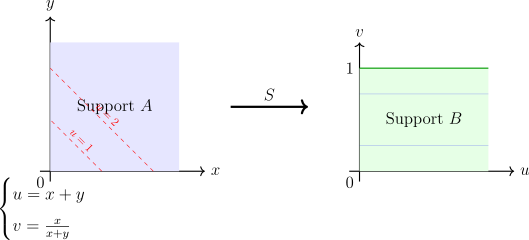
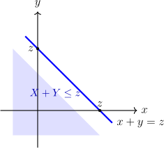
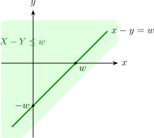

1.3 Functions of Random Variables
Suppose \(X_1, X_2, \dots , X_n\) are random variables with joint p.f. or p.d.f. \(f(x_1, x_2, \dots , x_n)\). The aim is the distribution of new variables \(Y_1, Y_2, \dots , Y_k\) that are functions of them, \[Y_j = h_j(X_1, X_2, \dots , X_n),\qquad j = 1,\dots ,k .\] Three techniques are used:
- 1.
- the c.d.f. technique, best for a single function whose event \(\{Y\leq y\}\) is easy to describe;
- 2.
- the transformation (Jacobian) method, best for one-to-one mappings, in one or several variables;
- 3.
- the moment generating function method, best for sums of independent variables.
Throughout, \(\text {GAM}(\alpha ,\beta )\) denotes the gamma distribution with shape \(\alpha \) and scale \(\beta \), with p.d.f. \[f(x) = \frac {x^{\alpha - 1}e^{-x/\beta }}{\Gamma (\alpha )\beta ^\alpha },\qquad x>0 ,\] mean \(\alpha \beta \), variance \(\alpha \beta ^2\) and m.g.f. \((1 - \beta t)^{-\alpha }\) for \(t<\frac 1\beta \); \(\text {EXP}(\beta ) = \text {GAM}(1,\beta )\) is the exponential distribution with mean \(\beta \). Where a rate is used instead, it is said so.
1.3.1 The Cumulative Distribution Function Method
The method uses only the definition of the c.d.f. To find the distribution of \(Y = g(X_1,\dots ,X_n)\):
- 1.
- write \(F_Y(y) = P(Y \leq y) = P(g(X_1, \dots , X_n) \leq y)\);
- 2.
- evaluate this probability by summing or integrating the joint p.f. or p.d.f. over the region \(\{\mathbf x : g(\mathbf x) \leq y\}\);
- 3.
- for a continuous \(Y\), differentiate: \(f_Y(y) = F_Y'(y)\).
Theorem 1.3.1 (The c.d.f. method for a monotone function). Let \(X\) have p.d.f. \(f_X\) and let \(Y = g(X)\), where \(g\) is differentiable and strictly increasing on the support of \(X\). Then \[F_Y(y) = P(g(X)\leq y) = P\left (X \leq g^{-1}(y)\right ) = F_X\left (g^{-1}(y) \right ) ,\qquad f_Y(y) = f_X\left (g^{-1}(y)\right )\frac {d}{dy}g^{-1}(y) .\] If \(g\) is strictly decreasing, \(F_Y(y) = 1 - F_X\left (g^{-1}(y)\right )\) and \(f_Y(y) = -f_X\left (g^{-1}(y)\right )\frac {d}{dy}g^{-1}(y)\).
Proof. If \(g\) is increasing, \(g(X)\leq y\) exactly when \(X\leq g^{-1}(y)\); if decreasing, exactly when \(X\geq g^{-1}(y)\). Differentiate by the chain rule. □
Example 1.3.2. Let \(X\) be a continuous random variable with p.d.f. \(f_X\), and \(Y = X^2\). Find the p.d.f. of \(Y\).
Solution. The function \(x^2\) is not monotone, so apply the method directly. For \(y > 0\), \[F_Y(y) = P(X^2 \leq y) = P(-\sqrt {y} \leq X \leq \sqrt {y}) = F_X(\sqrt {y}) - F_X(-\sqrt {y}) ,\] and \(F_Y(y) = 0\) for \(y\leq 0\). Differentiating by the chain rule, \[f_Y(y) = f_X(\sqrt {y}) \cdot \frac {1}{2\sqrt {y}} + f_X(-\sqrt {y}) \cdot \frac {1}{2\sqrt {y}} = \frac {1}{2\sqrt {y}} \left [ f_X(\sqrt {y}) + f_X(-\sqrt {y}) \right ], \qquad y > 0 .\] For \(X\sim N(0,1)\) this gives \(f_Y(y) = \frac {y^{-1/2}e^{-y/2}}{\sqrt {2\pi }}\), the \(\chi ^2(1)\) density: the square of a standard normal variable is chi-square with one degree of freedom.
Solution. For \(x > 0\), \(F_X(x) = \int _0^x 2e^{-2t}\, dt = 1 - e^{-2x}\). Since \(x > 0\), \(Y = e^X\) takes values in \((1, \infty )\), and \(e^x\) is increasing, so for \(y>1\), \[F_Y(y) = P(e^X \leq y) = P(X \leq \ln y) = 1 - e^{-2\ln y} = 1 - y^{-2} .\] Differentiating, \(f_Y(y) = 2y^{-3}\) for \(y > 1\), a Pareto distribution.
Example 1.3.4. Let \(X\) be uniform on \((0, 1)\), with \(f_X(x) = 1\) for \(0 < x < 1\), and let \(Y = -2\ln X\). Find the p.d.f. of \(Y\).
Solution. As \(x\) runs from \(1\) down to \(0^+\), \(y = -2\ln x\) runs from \(0\) up to \(\infty \), so the support of \(Y\) is \(y > 0\). The function is decreasing, and for \(y>0\) \[F_Y(y) = P(-2\ln X \leq y) = P\left (\ln X \geq -\frac {y}{2}\right ) = P\left (X \geq e^{-y/2}\right ) = 1 - e^{-y/2},\] the inequality reversing on division by \(-2\). Hence \(f_Y(y) = \frac {1}{2} e^{-y/2}\) for \(y > 0\).
Remark 1.3.5. The result is the exponential distribution with mean \(2\), which is also the chi-square distribution with \(2\) degrees of freedom. Since \(F_X(X)\) is uniform on \((0,1)\) for any continuous \(X\) (the probability integral transform), this gives a way to turn uniform random numbers into observations from other distributions, and is the basis of Fisher’s method of combining \(p\)-values.
Example 1.3.6. Prove the probability integral transform: if \(X\) is continuous with strictly increasing c.d.f. \(F\), then \(U = F(X)\) is uniform on \((0,1)\).
Solution. For \(0<u<1\), \(P(U\leq u) = P(F(X)\leq u) = P\left (X\leq F^{-1}(u)\right ) = F\left (F^{-1}(u)\right ) = u\), which is the uniform c.d.f.
1.3.2 Transformation (Change of Variable) Method
The Discrete Case
For a discrete variable a transformation simply relabels the points of the sample space.
Theorem 1.3.7 (Discrete case). Let \(X\) be a discrete random variable with p.f. \(f_X(x)\). If \(Y = g(X)\) is one to one, with inverse \(x = g^{-1}(y)\), then the p.f. of \(Y\) is \[ f_Y(y) = f_X\left (g^{-1}(y)\right ) ,\qquad y \in g(A),\] where \(A\) is the support of \(X\). If \(g\) is not one to one, \(f_Y(y) = \sum _{x : g(x) = y}f_X(x)\).
Proof. \(P(Y = y) = P(X\in \{x : g(x) = y\})\), which is a single term when \(g\) is one to one. □
Example 1.3.8. If \(X \sim \text {GEO}(p)\), with \(f_X(x) = pq^{x-1}\) for \(x = 1, 2, 3, \dots \) and \(q = 1 - p\), find the distribution of \(Y = X - 1\).
Solution. The inverse is \(x = y + 1\), so \[f_Y(y) = f_X(y+1) = pq^y, \qquad y = 0, 1, 2, \dots .\] The distribution of \(X\) counts the trial on which the first success occurs; \(Y\) counts the failures before it.
The Continuous Case
For a continuous variable the density must be rescaled as well as relabelled.
Theorem 1.3.9 (Continuous case). Let \(X\) have p.d.f. \(f_X(x)\) with support \(A\). If \(Y = h(X)\) is a one-to-one transformation of \(A\) onto \(B\) whose inverse \(x = h^{-1}(y)\) has a continuous, non-zero derivative on \(B\), then \[ f_Y(y) = f_X\left (h^{-1}(y)\right ) |J| ,\qquad y\in B ,\] where \(J = \frac {dx}{dy} = \frac {d}{dy}h^{-1}(y)\) is the Jacobian of the transformation.
Proof. A one-to-one differentiable function with non-zero derivative is strictly monotone, so this is Theorem 1.3.1; the absolute value covers both the increasing and the decreasing case. □
Example 1.3.10. Let \(X\) have the beta distribution with parameters \(\alpha \) and \(\beta \), \[ f_X(x) = \frac {1}{B(\alpha , \beta )} x^{\alpha - 1}(1 - x)^{\beta - 1}, \qquad 0 < x < 1 .\] Find the p.d.f. of \(Y = -\ln X\).
Solution. As in Example 1.3.4, the support of \(Y\) is \((0,\infty )\). The inverse is \(x = e^{-y}\), with \(J = \frac {dx}{dy} = -e^{-y}\) and \(|J| = e^{-y}\). By Theorem 1.3.9, \[f_Y(y) = \frac {1}{B(\alpha , \beta )} (e^{-y})^{\alpha - 1} (1 - e^{-y})^{\beta - 1} \cdot e^{-y} = \frac {1}{B(\alpha , \beta )} e^{-\alpha y} (1 - e^{-y})^{\beta - 1}, \qquad y > 0 .\] With \(\beta = 1\) this is \(\alpha e^{-\alpha y}\): if \(X\sim \text {BETA}(\alpha ,1)\), then \(-\ln X\sim \text {EXP}\left (\frac 1\alpha \right )\).
Bivariate Transformations
In two dimensions, for example to find the distribution of a sum or a ratio, a second variable is introduced so that the transformation is one to one, and the bivariate Jacobian of the subsection on Jacobians in multivariable calculus is used.
Theorem 1.3.11 (Bivariate transformation). Let \((X, Y)\) have joint p.d.f. \(f_{X,Y}(x,y)\) on the support \(A\). Let \(U = h_1(X,Y)\) and \(V = h_2(X,Y)\) define a one-to-one transformation of \(A\) onto \(B\), with inverse \(x = w_1(u,v)\), \(y = w_2(u,v)\) having continuous partial derivatives and non-zero Jacobian \[ J = \frac {\partial (x,y)}{\partial (u,v)} = \begin {vmatrix} \frac {\partial x}{\partial u} & \frac {\partial x}{\partial v} \\[1ex] \frac {\partial y}{\partial u} & \frac {\partial y}{\partial v} \end {vmatrix}\] on \(B\). Then the joint p.d.f. of \((U, V)\) is \[ f_{U,V}(u,v) = f_{X,Y}(w_1(u,v), w_2(u,v))\,|J| ,\qquad (u,v)\in B .\]
Proof. For a region \(C\subseteq B\), \(P((U,V)\in C) = P((X,Y)\in w(C)) = \iint _{w(C)}f_{X,Y}\,dx\,dy\), and by the change of variables formula for double integrals this is \(\iint _C f_{X,Y}(w_1,w_2)|J|\,du\,dv\). □
To find the distribution of a single function \(U = h_1(X,Y)\), choose a convenient second variable \(V\), find the joint p.d.f. of \((U,V)\), and integrate out \(v\).
Example 1.3.12. Let \(X\sim \text {GAM}(a,1)\) and \(Y\sim \text {GAM}(b,1)\) be independent.
- (i)
- Find the joint p.d.f. of \(U = X + Y\) and \(V = \frac {X}{X + Y}\).
- (ii)
- Are \(U\) and \(V\) independent?
- (iii)
- Find the marginal p.d.f.s of \(U\) and \(V\).
Solution.
- (i)
- By independence, the joint p.d.f. is \[ f_{X,Y}(x,y) = \frac {1}{\Gamma (a)\Gamma (b)} x^{a-1} y^{b-1} e^{-(x+y)}, \qquad x, y > 0 .\] The transformation \(u = x + y\), \(v = \frac {x}{x+y}\) has inverse \(x = uv\), \(y = u(1-v)\), and maps the
quadrant \(x,y>0\) onto the strip \(u > 0\), \(0 < v < 1\).

Figure 1.3: The transformation maps the \(x,y > 0\) quadrant to a rectangular strip where \(u > 0\) and \(0 < v < 1\). The Jacobian is \[ J = \begin {vmatrix} v & u \\ 1-v & -u \end {vmatrix} = -uv - u(1-v) = -u ,\qquad |J| = u ,\] so by Theorem 1.3.11 \begin {align*} f_{U,V}(u,v) &= \frac {(uv)^{a-1} (u(1-v))^{b-1} e^{-u}}{\Gamma (a)\Gamma (b)}\cdot u\\ &= \frac {u^{a+b-1} e^{-u}\, v^{a-1} (1-v)^{b-1}}{\Gamma (a)\Gamma (b)} ,\qquad u>0,\ 0<v<1 . \end {align*}
- (ii)
- The joint p.d.f. factorises as \[f_{U,V}(u,v) = \frac {u^{a + b - 1} e^{-u}}{\Gamma (a + b)} \times \frac {\Gamma (a + b)\, v^{a - 1}(1 - v)^{b - 1}}{\Gamma (a)\Gamma (b)} ,\] a function of \(u\) times a function of \(v\), on the product set \((0,\infty )\times (0,1)\). By the factorisation criterion, \(U\) and \(V\) are independent.
- (iii)
- The two factors are themselves densities: integrating out \(v\) uses \(\int _0^1v^{a-1}(1 - v)^{b-1}\,dv = B(a,b) = \frac {\Gamma (a)\Gamma (b)}{\Gamma (a + b)}\), and integrating out \(u\) uses \(\int _0^\infty u^{a+b-1}e^{-u}\,du = \Gamma (a + b)\). So \[f_U(u) = \frac {u^{a + b - 1} \, e^{-u}}{\Gamma (a + b)},\ u > 0,\qquad f_V(v) = \frac {v^{a - 1}\, (1 - v)^{b - 1}}{B(a,b)},\ 0 < v < 1 ,\] that is, \(U\sim \text {GAM}(a + b ,1)\) and \(V \sim \text {BETA}(a,b)\).
Exercise 1.3.13. For \(U\) and \(V\) of Example 1.3.12, show that
- 1.
- \(E(V) = \frac {a}{a+b}\);
- 2.
- \(\text {Var}(V) = \frac {ab}{(a+b)^2(a+b+1)}\);
- 3.
- \(E(U) = a+b\) and \(\text {Var}(U) = a+b\).
Answer: For (1) and (2), \(E(V^k) = \frac {B(a + k,b)}{B(a,b)}\), giving \(E(V) = \frac {a}{a + b}\) and \(E(V^2) = \frac {a(a + 1)}{(a + b)(a + b + 1)}\). For (3), use the gamma moments with \(\alpha = a + b\), \(\beta = 1\).
Discrete Bivariate Transformations
In the discrete case the transformation is a point-to-point mapping, and the work lies in identifying the new support correctly.
Theorem 1.3.14. Let \(f(x,y)\) be the joint p.f. of discrete random variables \(X\) and \(Y\), and let \(U = h_1(X,Y)\), \(V = h_2(X,Y)\) define a one-to-one transformation of \(A = \{(x,y) : f(x,y) > 0\}\) onto \(B\). Then the joint p.f. of \(U\) and \(V\) is \[g(u,v) = f(w_1(u,v), w_2(u,v)) ,\qquad (u,v)\in B ,\] where \(x = w_1(u,v)\) and \(y = w_2(u,v)\) is the inverse transformation.
Example 1.3.15. Let \(X\) and \(Y\) have joint p.f. \(f(x,y) = \frac {1}{36}xy\) for \(x = 1, 2, 3\) and \(y = 1, 2, 3\). Find the joint p.f. of \(U = XY\) and \(V = Y\), and the marginal p.f. of \(U\).
Solution. The inverse is \(y = v\), \(x = \frac {u}{v}\), so \[g(u,v) = \frac {1}{36} \cdot \frac {u}{v}\cdot v = \frac {u}{36}\] on the support \(B = \{(u,v) : v \in \{1,2,3\},\ \frac {u}{v} \in \{1,2,3\}\}\): for \(v = 1\), \(u\in \{1,2,3\}\); for \(v = 2\), \(u\in \{2,4,6\}\); for \(v = 3\), \(u\in \{3,6,9\}\). The joint and marginal p.f.s are shown in the table.
| \(u \setminus v\) | \(1\) | \(2\) | \(3\) | \(g_U(u)\) |
| \(1\) | \(\frac {1}{36}\) | \(0\) | \(0\) | \(\frac {1}{36}\) |
| \(2\) | \(\frac {2}{36}\) | \(\frac {2}{36}\) | \(0\) | \(\frac {4}{36}\) |
| \(3\) | \(\frac {3}{36}\) | \(0\) | \(\frac {3}{36}\) | \(\frac {6}{36}\) |
| \(4\) | \(0\) | \(\frac {4}{36}\) | \(0\) | \(\frac {4}{36}\) |
| \(6\) | \(0\) | \(\frac {6}{36}\) | \(\frac {6}{36}\) | \(\frac {12}{36}\) |
| \(9\) | \(0\) | \(0\) | \(\frac {9}{36}\) | \(\frac {9}{36}\) |
| \(g_V(v)\) | \(\frac {6}{36}\) | \(\frac {12}{36}\) | \(\frac {18}{36}\) | \(1\) |
Example 1.3.16. Let \(X\) and \(Y\) be independent Poisson random variables with means \(\mu \) and \(\lambda \). Find
- (i)
- the joint p.f. of \(U = X + Y\) and \(V = Y\);
- (ii)
- the marginal p.f. of \(U\).
Solution.
- (i)
- The joint p.f. of \(X\) and \(Y\) is \[f(x,y) = \frac {e^{-(\mu + \lambda )}\, \mu ^x\, \lambda ^y}{x!\, y!} ,\qquad x, y = 0, 1, 2, \dots .\] The inverse of \(u = x + y\), \(v = y\) is \(y = v\), \(x = u - v\), and \(x\geq 0\) means \(v\leq u\), so \[g(u,v) = \frac {e^{-(\mu + \lambda )}\, \mu ^{u-v}\, \lambda ^v}{(u - v)!\, v!} ,\qquad u = 0, 1, 2, \dots ;\ v = 0, 1, \dots , u .\]
- (ii)
- Summing over \(v\) and using the binomial theorem, \[g_U(u) = \frac {e^{-(\mu + \lambda )}}{u!}\sum _{v = 0}^u\binom {u}{v}\mu ^{u - v}\lambda ^v = \frac {e^{-(\mu + \lambda )}\,(\mu + \lambda )^u}{u!} ,\qquad u = 0, 1, 2, \dots ,\] so \(U\sim \text {POI}(\mu + \lambda )\).
Example 1.3.17. For \(X\) and \(Y\) as in Example 1.3.16, find the conditional distribution of \(Y\) given \(X + Y = u\).
Solution. Dividing the joint p.f. by the marginal, \[P(V = v\mid U = u) = \frac {g(u,v)}{g_U(u)} = \binom {u}{v}\left (\frac {\lambda }{\mu + \lambda }\right )^v\left (\frac {\mu }{\mu + \lambda }\right )^{u - v},\qquad v = 0,\dots ,u ,\] the binomial distribution with \(u\) trials and success probability \(\frac {\lambda }{\mu + \lambda }\). Given the total number of events, each one comes from the second source with probability proportional to its rate.
1.3.3 Distributions of Sum and Difference of Random Variables
The distribution of \(Z = X + Y\) or \(W = X - Y\) is found by adding up the joint density along the lines \(x + y = z\) or \(x - y = w\).
Theorem 1.3.18. Let \(X\) and \(Y\) be jointly continuous random variables with joint p.d.f. \(f(x,y)\).
- (a)
- The p.d.f. of \(Z = X + Y\) is \[f_Z(z) = \int _{-\infty }^\infty f(x,z-x)\,dx = \int _{-\infty }^\infty f(z-y,y)\, dy .\]
- (b)
- The p.d.f. of \(W = X - Y\) is \[f_W(w) = \int _{-\infty }^\infty f(x,x - w)\,dx = \int _{-\infty }^\infty f(w+y,y)\, dy .\]
Proof. (a) The c.d.f. is the integral of \(f\) over the half-plane \(x + y \leq z\).

Integrating \(x\) first, \[F_Z(z) = \iint \limits _{x+y \leq z} f(x,y)\,dx\, dy = \int _{-\infty }^\infty \int ^{z-y}_{-\infty }f(x,y)\, dx\,dy .\] Differentiating under the integral sign, by the fundamental theorem of calculus, \[f_Z(z) = \int _{-\infty }^\infty \frac {\partial }{\partial z}\left [ \int ^{z-y}_{-\infty }f(x,y)\, dx\right ]dy = \int _{-\infty }^\infty f(z-y,y)\,dy ,\] and integrating \(y\) first instead gives the other form.
(b) The c.d.f. is the integral over the half-plane \(x - y\leq w\), that is \(y\geq x - w\).

So \(F_W(w) = \int _{-\infty }^\infty \int _{x - w}^\infty f(x,y)\,dy\,dx\), and differentiating with respect to \(w\), the lower limit \(x - w\) contributing with a minus sign twice, \[f_W(w) = \int _{-\infty }^\infty f(x, x - w)\,dx .\] The substitution \(x = w + y\) gives the other form. □
Corollary 1.3.19 (The convolution formula). If \(X\) and \(Y\) are independent continuous random variables, then \[f_Z(z) = \int _{-\infty }^\infty f_X(x)f_Y(z-x)\,dx = \int _{-\infty }^\infty f_X(z-y)f_Y(y)\,dy ,\qquad f_W(w) = \int _{-\infty }^\infty f_X(w + y)f_Y(y)\,dy .\]
The integrand is zero outside the supports, and finding the actual limits of integration is the main work in applications.
Example 1.3.20. Let \(X\) and \(Y\) be independent exponential random variables, each with mean \(\lambda \). Find the distribution of \(X+Y\).
Solution. Here \(f_X(x) = \frac {1}{\lambda }e^{-x/\lambda }\) for \(x>0\) and likewise for \(Y\). The integrand \(f_X(x)f_Y(z - x)\) is non-zero only when \(x>0\) and \(z - x>0\), so for \(z>0\), \[f_Z(z) = \int _0^z \frac {1}{\lambda } e^{-x/\lambda } \cdot \frac {1}{\lambda } e^{-(z-x)/\lambda }\, dx = \int ^z_0 \frac {1}{\lambda ^2} e^{-z/\lambda }\, dx = \frac {z}{\lambda ^2} e^{-z/\lambda } ,\qquad z>0 .\] This is \(\frac {z^{2-1}e^{-z/\lambda }}{\Gamma (2)\lambda ^2}\), so \(X + Y \sim \text {GAM}(2,\lambda )\).
More generally, if \(X_1,\dots ,X_k\) are independent with \(X_i\sim \text {GAM}(\alpha _i,\beta )\), the same scale \(\beta \), then \(\sum _{i=1}^kX_i\sim \text {GAM}\left (\sum _{i=1}^k\alpha _i,\beta \right )\); this is proved most easily by the m.g.f. method below.
Example 1.3.21. Let \(X\) and \(Y\) be independent standard normal random variables. Find the distribution of \(W = X-Y\).
Solution. By Corollary 1.3.19, \[f_W(w) = \frac {1}{2\pi } \int ^{\infty }_{-\infty } e^{-\frac {1}{2}(w + y)^2} e^{-\frac {1}{2}y^2}\, dy = \frac {1}{2\pi } \int ^{\infty }_{-\infty } e^{-\frac {1}{2}(w^2 + 2wy + 2y^2)}\, dy .\] Completing the square, \(w^2 + 2wy + 2y^2 = 2\left (y + \frac {w}{2}\right )^2 + \frac {w^2}{2}\), so \[f_W(w) = \frac {e^{-w^2/4}}{2\pi }\int ^{\infty }_{-\infty }e^{-\left (y + \frac {w}{2}\right )^2}\,dy = \frac {e^{-w^2/4}}{2\pi }\sqrt \pi = \frac {e^{-w^2/4}}{\sqrt {4\pi }} ,\qquad -\infty < w < \infty .\] This is the \(N(0,2)\) density: the difference of two independent standard normals is normal with variance \(2\).
Exercise 1.3.22. Let \(X\sim \text {GAM}(\alpha _1, \beta )\) and \(Y\sim \text {GAM}(\alpha _2, \beta )\) be independent. Use the convolution formula to show that \(X + Y \sim \text {GAM}(\alpha _1 + \alpha _2, \beta )\).
Hint: After taking out the constants, the integral is \(\int _0^zx^{\alpha _1 - 1}(z - x)^{\alpha _2 - 1}\,dx = z^{\alpha _1 + \alpha _2 - 1}B(\alpha _1,\alpha _2)\), by the substitution \(x = zt\).
Solution. The integrand \(f_X(x)f_Y(z - x)\) is \(1\) when \(0<x<1\) and \(0<z - x<1\), that is \(\max (0,z - 1)<x<\min (1,z)\), and \(0\) otherwise. So \[f_Z(z) = \begin {cases} z, & 0<z\leq 1,\\ 2 - z, & 1<z<2 , \end {cases}\] the triangular distribution on \((0,2)\). The density of a sum is smoother than those of its terms.
Theorem 1.3.24. If \(X\) and \(Y\) are discrete random variables with joint p.f. \(f(x,y)\), then \(Z = X + Y\) and \(W = X - Y\) have p.f.s \begin {gather*} P(Z = z) = \sum _x f(x,z - x) = \sum _y f(z - y,y),\\ P(W = w) = \sum _x f(x, x - w) = \sum _y f(w + y,y) . \end {gather*}
Proof. \(\{Z = z\}\) is the disjoint union over \(x\) of the events \(\{X = x,\ Y = z - x\}\), and similarly for \(W\). □
Example 1.3.25. The joint p.f. of \(X\) and \(Y\) is given in the table below. Find the distributions of \(Z = X + Y\) and \(W = X - Y\).
Solution. By Theorem 1.3.24, each probability is the sum of the entries on a diagonal of the table: for \(Z = z\) the cells with \(x + y = z\), and for \(W = w\) the cells with \(x - y = w\). For example \(P(Z = 4) = f(1,3) + f(2,2) + f(3,1) = 0.02 + 0.20 + 0.02 = 0.24\). The results are
| \(z\) | 2 | 3 | 4 | 5 | 6 | 7 | 8 |
| \(P(Z = z)\) | 0.10 | 0.10 | 0.24 | 0.14 | 0.24 | 0.08 | 0.10 |
and
| \(w\) | \(-3\) | \(-2\) | \(-1\) | 0 | 1 | 2 | 3 |
| \(P(W = w)\) | 0.02 | 0.22 | 0.14 | 0.42 | 0.14 | 0.04 | 0.02 |
Each set of probabilities sums to \(1\).
1.3.4 Distributions of Products and Quotients of Random Variables
Theorem 1.3.26. Let \(X\) and \(Y\) be jointly continuous random variables with joint p.d.f. \(f(x,y)\), where \(P(X = 0) = 0\). Then \(Z=\frac {Y}{X}\) and \(W = XY\) have p.d.f.s \[f_Z(z) = \int _{-\infty }^\infty |x|\,f(x,xz)\,dx ,\qquad f_W(w) = \int _{-\infty }^\infty \frac {1}{|x|}f\left (x,\frac {w}{x}\right )dx .\]
Proof. For the quotient, take \(U = X\) and \(Z = \frac {Y}{X}\), with inverse \(x = u\), \(y = uz\) and Jacobian \(\begin {vmatrix}1 & 0\\ z & u\end {vmatrix} = u\). By Theorem 1.3.11 the joint p.d.f. of \((U,Z)\) is \(f(u,uz)|u|\), and integrating out \(u\) gives \(f_Z\). For the product, take \(U = X\), \(W = XY\), with inverse \(x = u\), \(y = \frac {w}{u}\) and Jacobian \(\frac 1u\), and integrate out \(u\) again. □
Corollary 1.3.27. If \(X\) and \(Y\) are independent continuous random variables, then \(Z = \frac {Y}{X}\) has p.d.f. \[f_Z(z) = \int ^{\infty }_{-\infty }|x|\, f_X(x)\,f_Y(zx)\, dx .\]
The formula can also be derived from the c.d.f. directly, splitting according to the sign of \(X\): \(F_Z(z) = P(Y\leq zX,\ X>0) + P(Y\geq zX,\ X<0)\), and differentiating each part under the integral sign produces the factor \(x\) on \(x>0\) and \(-x\) on \(x<0\), which together give \(|x|\).
Example 1.3.28. Let \(X\) and \(Y\) be independent, each with p.d.f. \(\lambda e^{-\lambda x}\) for \(x > 0\). Find the p.d.f. of \(Z = \frac {Y}{X}\).
Solution. By Corollary 1.3.27, for \(z>0\), \[f_Z(z) = \int ^{\infty }_0x\,\lambda e^{-\lambda x}\,\lambda e^{-\lambda zx}\, dx = \lambda ^2\int ^{\infty }_0xe^{-\lambda (1 + z)x}\, dx = \frac {\lambda ^2}{\lambda ^2 (1 + z)^2} = \frac {1}{(1+z)^2} ,\] using \(\int _0^\infty xe^{-cx}\,dx = \frac {1}{c^2}\). The parameter \(\lambda \) has disappeared, as it must: the ratio of two lifetimes does not depend on the unit of time.
Example 1.3.29. Show that the ratio of two independent standard normal variables has the Cauchy distribution, with p.d.f. \(\frac {1}{\pi (1 + z^2)}\).
Solution. By Corollary 1.3.27, using the symmetry of the integrand in \(x\), \[f_Z(z) = 2\int _0^\infty x\frac {e^{-x^2/2}}{\sqrt {2\pi }}\frac {e^{-z^2x^2/2}} {\sqrt {2\pi }}\,dx = \frac {1}{\pi }\int _0^\infty xe^{-(1 + z^2)x^2/2}\,dx = \frac {1}{\pi (1 + z^2)} .\] The Cauchy distribution has no mean: \(\int |z|f_Z(z)\,dz\) diverges.
1.3.5 Moment Generating Function Method
The method rests on two facts: the m.g.f. of a sum of independent variables is the product of their m.g.f.s, and an m.g.f. determines its distribution (Theorem 1.1.5).
Theorem 1.3.30. If \(X_1, X_2, \dots , X_n\) are independent random variables with m.g.f.s \(M_{X_i}(t)\), then the m.g.f. of \(Y = \sum ^n_{i = 1}X_i\) is \[M_{Y}(t) = M_{X_1}(t)\, M_{X_2}(t)\cdots M_{X_n}(t) .\] In particular, if the \(X_i\) are independent and identically distributed with m.g.f. \(M_X(t)\), then \(M_Y(t) = [M_X(t)]^n\).
Proof. By independence the expectation of the product factorises: \[M_Y(t) = E\left (e^{tX_1}e^{tX_2}\cdots e^{tX_n}\right ) = E\left (e^{tX_1}\right ) E\left (e^{tX_2}\right ) \cdots E\left (e^{tX_n}\right ) .\] □
Special Results
The following are used repeatedly in sampling theory, and each follows from Theorem 1.3.30 and the m.g.f.s of the distributions involved.
- 1.
- If \(X\sim \text {GAM}(\alpha ,\beta )\), then \(\frac {2X}{\beta } \sim \chi ^2(2\alpha )\).
- 2.
- If \(X_i \sim \text {GAM}(\alpha _i,\beta )\), \(i = 1, \dots , n\), independently, then \(\sum ^n_{i = 1} X_i \sim \text {GAM}\left (\sum ^n_{i = 1} \alpha _i, \beta \right )\).
- 3.
- If \(X_i \sim \text {EXP}(\beta )\), \(i = 1, \dots , n\), independently, then \(\sum ^n_{i = 1}X_i \sim \text {GAM}(n,\beta )\).
- 4.
- If \(X_i \sim N(\mu ,\sigma ^2)\), \(i = 1, \dots , n\), independently, then \(\sum ^n_{i = 1}\left (\frac {X_i - \mu }{\sigma }\right )^2\sim \chi ^2(n)\).
Proof. For 1, \(M_{2X/\beta }(t) = M_X\left (\frac {2t}{\beta }\right ) = (1 - 2t)^{-\alpha }\), the m.g.f. of \(\chi ^2(2\alpha )\) (Theorem 1.3.35 below). For 2, \(\prod _i(1 - \beta t)^{-\alpha _i} = (1 - \beta t)^{-\sum \alpha _i}\), and 3 is the case \(\alpha _i = 1\). For 4, each \(Z_i = \frac {X_i - \mu }{\sigma }\) is standard normal, \(Z_i^2\sim \chi ^2(1) = \text {GAM}\left (\frac 12,2\right )\) by Example 1.3.2, and the sum of \(n\) independent such variables is \(\text {GAM}\left (\frac n2,2\right ) = \chi ^2(n)\) by 2. □
Example 1.3.31. Let \(X_1, X_2, \dots , X_n\) be independent with \(X_i \sim \text {POI}(\mu _i)\). Show that \(Y = \sum ^n_{i = 1} X_i \sim \text {POI}\left (\sum ^n_{i = 1} \mu _i\right )\).
Solution. The m.g.f. of \(\text {POI}(\mu _i)\) is \(M_{X_i}(t) = \sum _x e^{tx}\frac {e^{-\mu _i}\mu _i^x}{x!} = e^{\mu _i(e^t - 1)}\), so by Theorem 1.3.30 \[M_Y(t) = \prod ^n_{i =1} e^{\mu _i(e^t-1)} = e^{\left (\sum _i\mu _i\right )(e^t - 1)},\] which is the m.g.f. of \(\text {POI}\left (\sum _i\mu _i\right )\). By uniqueness, \(Y\) has that distribution. This repeats Example 1.3.16 in two lines.
- 1.
- Let \(X_1, \dots , X_n\) be independent with \(X_i\sim \text {BIN}(n_i,p)\). Show that \(\sum _i X_i \sim \text {BIN}\left (\sum _i n_i,p\right )\).
- 2.
- Let \(X_1, \dots , X_n\) be independent with \(X_i \sim \text {NB}(k_i,p)\). Show that \(\sum _i X_i \sim \text {NB}\left (\sum _i k_i,p\right )\).
Answer: The m.g.f.s are \((q + pe^t)^{n_i}\) and \(\left (\frac {pe^t}{1 - qe^t}\right )^{k_i}\) with \(q = 1 - p\); the products have the same form with the exponents added. The common \(p\) is essential.
Theorem 1.3.33. Let \(X_1, \dots , X_n\) be independent with \(X_i \sim N(\mu _i,\sigma _i^2)\), and let \(a_1,\dots ,a_n\) be constants. Then \[\sum ^n_{i = 1}a_iX_i \sim N\left (\sum ^n_{i = 1} a_i\mu _i,\ \sum ^n_{i = 1}a_i^2\sigma ^2_i\right ).\]
Proof. With \(M_{X_i}(t) = e^{\mu _i t + \frac {1}{2}\sigma ^2_it^2}\) and \(Y = \sum _i a_i X_i\), \[M_Y(t) = \prod ^n_{i = 1}E\left (e^{(a_it)X_i}\right ) = \prod ^n_{i = 1}e^{\mu _ia_it + \frac {1}{2}\sigma ^2_ia^2_it^2} = e^{\left (\sum _i\mu _ia_i\right )t + \frac {1}{2}\left (\sum _i\sigma ^2_ia^2_i\right )t^2},\] the m.g.f. of the stated normal distribution. □
Corollary 1.3.34. If \(X_1,\dots ,X_n\) are independent and \(N(\mu ,\sigma ^2)\), then \(\sum ^n_{i = 1} X_i \sim N(n\mu , n\sigma ^2)\) and \(\bar X = \frac {1}{n}\sum ^n_{i = 1}X_i \sim N\left (\mu , \frac {\sigma ^2}{n}\right )\).
Proof. Take \(a_i = 1\), and then \(a_i = \frac 1n\), in Theorem 1.3.33. □
Theorem 1.3.35. If \(X \sim \chi ^2(n)\), with p.d.f. \[f(x) = \frac {1}{2^{n/2}\Gamma \left (\frac {n}{2}\right )}\, x^{\frac {n}{2}-1}\, e^{-x/2} ,\qquad x > 0 ,\] then \[M_X(t) = (1-2t)^{-n/2},\ t<\frac 12 ,\qquad E(X) = n ,\qquad \text {Var}(X) = 2n .\]
Proof. For \(t<\frac 12\), substituting \(y = \left (\frac {1}{2}-t\right )x\), \[M_X(t) = \frac {1}{2^{n/2}\Gamma \left (\frac {n}{2}\right )}\int _0^{\infty }x^{\frac {n} {2}-1}\, e^{-\left (\frac {1}{2}-t\right )x}\, dx = \frac {1}{2^{n/2}\Gamma \left ( \frac {n}{2}\right )}\cdot \frac {\Gamma \left (\frac {n}{2}\right )}{\left (\frac {1}{2}-t \right )^{n/2}} = (1-2t)^{-n/2} .\] Then \(M'_X(t) = n(1 - 2t)^{-\frac {n}{2}-1}\) and \(M''_X(t) = n(n + 2)(1 - 2t)^{-\frac {n}{2}-2}\), so \(E(X) = n\), \(E(X^2) = n^2 + 2n\) and \(\text {Var}(X) = 2n\). □
The chi-square distribution with \(n\) degrees of freedom is therefore \(\text {GAM}\left (\frac n2,2\right )\).
Example 1.3.36. Let \(X_1,\dots ,X_n\) be a random sample from \(\text {EXP}(\beta )\). Find the distribution of \(\frac {2n\bar X}{\beta }\) and use it to find \(c\) with \(P(\bar X>c\beta ) = 0.05\) when \(n = 10\).
Solution. By special result 3, \(\sum X_i = n\bar X\sim \text {GAM}(n,\beta )\), and by result 1, \(\frac {2n\bar X}{\beta }\sim \chi ^2(2n)\). With \(n = 10\), \(P(\bar X>c\beta ) = P\left (\chi ^2(20)>20c\right ) = 0.05\) when \(20c = 31.41\), the upper \(5\%\) point of \(\chi ^2(20)\), so \(c = 1.571\).
1.3.6 Distribution of \(t\), \(\chi ^2\) and \(F\) Random Variables
The three distributions of normal sampling theory are all built from independent standard normal variables.
Definition 1.3.37 (Chi-square distribution). A random variable \(X\) with p.d.f. \[f_X(x) = \frac {x^{\frac {k}{2}-1}e^{-x/2}}{\Gamma \left (\frac {k}{2}\right ) 2^{k/2}} ,\qquad x>0,\] has the chi-square distribution with \(k\) degrees of freedom, written \(X\sim \chi ^2(k)\).
- 1.
- Comparing with the gamma p.d.f., \(\chi ^2(k) = \text {GAM}\left (\frac k2, 2\right )\): shape \(\frac k2\) and scale \(2\). (In the rate form, with \(\lambda = \frac 1\beta \), it is the gamma with \(\alpha = \frac k2\) and \(\lambda = \frac 12\).)
- 2.
- Hence, from the gamma moments \(\alpha \beta \) and \(\alpha \beta ^2\), a chi-square variable has mean \(k\) and variance \(2k\): the mean equals the degrees of freedom and the variance is twice them, as in Theorem 1.3.35.
- 3.
- Its m.g.f. is \((1 - 2t)^{-k/2}\) for \(t<\frac 12\).
Theorem 1.3.39. If \(X_1, \dots , X_k\) are independent with \(X_j\sim N(\mu _j, \sigma ^2_j)\), then \[W = \sum ^k_{j=1}\left (\frac {X_j - \mu _j}{\sigma _j}\right )^2 \sim \chi ^2(k).\] That is, a chi-square variable with \(k\) degrees of freedom is a sum of squares of \(k\) independent standard normal variables.
Proof. The variables \(Z_j = \frac {X_j - \mu _j}{\sigma _j}\) are independent standard normal, so by Theorem 1.3.30 \(M_W(t) = \left [E\left (e^{tZ^2}\right )\right ]^k\) with \(Z\sim N(0,1)\). For \(t<\frac 12\), substituting \(u = \sqrt {1 - 2t}\,z\), \[E\left (e^{tZ^2}\right ) = \int ^{\infty }_{-\infty } \frac {1}{\sqrt {2 \pi }}e^{-\frac {1}{2}(1 - 2t)z^2}\, dz = \frac {1}{\sqrt {1 - 2t}}\int ^{\infty }_{-\infty } \frac {1}{\sqrt {2\pi }}e^{-\frac {1}{2} u^2} \, du = \frac {1}{\sqrt {1 - 2t}} .\] So \(M_W(t) = (1 - 2t)^{-k/2}\), and by uniqueness \(W\sim \chi ^2(k)\). □
Corollary 1.3.40. If \(X_1, X_2,\dots , X_n\) is a random sample from \(N(\mu , \sigma ^2)\), then \(\sum ^n_{j=1} \left ( \frac {X_j - \mu }{\sigma }\right )^2 \sim \chi ^2(n)\).
When \(\mu \) is replaced by \(\bar X\), one degree of freedom is lost: \(\frac {(n - 1)S^2}{\sigma ^2} = \sum \left (\frac {X_j - \bar X}{\sigma }\right )^2\sim \chi ^2(n - 1)\), and \(\bar X\) and \(S^2\) are independent. This fact, proved in texts on linear models by an orthogonal change of variables, is used below and in the chapters on estimation and testing.
Definition 1.3.41 (\(F\) distribution). A random variable \(X\) with p.d.f. \[f_X(x) = \frac {\Gamma \left (\frac {m + n}{2}\right ) \left (\frac {m}{n}\right )^{m/2} x^{\frac {m}{2}-1}}{\Gamma \left (\frac {m}{2}\right )\Gamma \left (\frac {n}{2}\right ) \left (1 + \frac {m}{n}x\right )^{\frac {m+n}{2}}} ,\qquad x>0,\] has the \(F\) distribution with \(m\) and \(n\) degrees of freedom (in the numerator and the denominator), written \(X\sim F(m,n)\).
Theorem 1.3.42. If \(U\) and \(V\) are independent with \(U\sim \chi ^2(m)\) and \(V\sim \chi ^2(n)\), then \[X = \frac {U/m}{V/n}\sim F(m,n) .\] The \(F\) distribution is the ratio of two independent chi-square variables, each divided by its degrees of freedom.
Proof. The plan is to introduce a second variable \(Z = V\), find the joint p.d.f. of \((X,Z)\) by Theorem 1.3.11, and integrate out \(z\). The joint p.d.f. of \(U\) and \(V\) is \[f_{U,V}(u,v) = \frac {u^{\frac {m}{2}-1}v^{\frac {n}{2}-1} e^{-(u+v)/2}}{2^{\frac {m + n}{2}}\, \Gamma \left (\frac {m}{2}\right ) \, \Gamma \left (\frac {n}{2}\right )} ,\qquad u,v>0 .\] The inverse of \(x = \frac {u/m}{v/n}\), \(z = v\) is \(u = \frac {m}{n}xz\), \(v = z\), with Jacobian \[J = \begin {vmatrix} \frac {\partial u}{\partial x} & \frac {\partial u}{\partial z}\\[1ex] \frac {\partial v}{\partial x} & \frac {\partial v}{\partial z} \end {vmatrix} = \begin {vmatrix} \frac {m}{n}z & \frac {m}{n}x\\ 0 & 1 \end {vmatrix} = \frac {m}{n}z .\] So for \(x,z>0\), \[f_{X,Z}(x,z) = \frac {\left (\frac {m}{n}xz\right )^{\frac {m}{2}-1} z^{\frac {n}{2}-1} e^{-\frac {z}{2}\left (1 + \frac {m}{n}x\right )}}{2^{\frac {m+n}{2}} \Gamma \left (\frac {m}{2}\right )\Gamma \left (\frac {n}{2}\right )}\cdot \frac {m}{n}z = \frac {\left (\frac {m}{n}\right )^{m/2}x^{\frac {m}{2}-1}\, z^{\frac {m+n}{2}-1}\, e^{-\frac {z}{2}\left (1 + \frac {m}{n}x\right )}}{2^{\frac {m+n}{2}} \Gamma \left (\frac {m}{2}\right )\Gamma \left (\frac {n}{2}\right )} .\] Integrating out \(z\) with \(\int _0^\infty z^{a-1}e^{-cz}\,dz = \frac {\Gamma (a)}{c^a}\), where \(a = \frac {m+n}{2}\) and \(c = \frac 12\left (1 + \frac mnx\right )\), \[f_X(x) = \frac {\left (\frac {m}{n}\right )^{m/2}x^{\frac {m}{2}-1}}{2^{\frac {m+n}{2}} \Gamma \left (\frac {m}{2}\right )\Gamma \left (\frac {n}{2}\right )}\cdot \frac {\Gamma \left (\frac {m + n}{2}\right )2^{\frac {m+n}{2}}}{\left (1 + \frac {m}{n}x\right )^{ \frac {m+n}{2}}},\] which is the \(F(m,n)\) density. □
Definition 1.3.43 (\(t\) distribution). Let \(Z\sim N(0,1)\) and \(U\sim \chi ^2(m)\) be independent. The distribution of \[ T = \frac {Z}{\sqrt {U/m}}\] is the \(t\) distribution with \(m\) degrees of freedom, written \(T\sim t(m)\).
Remark 1.3.44. For a random sample from \(N(\mu ,\sigma ^2)\), with \(S^2\) the sample variance, \[T = \frac {\bar X - \mu }{S/\sqrt n} = \frac {\dfrac {\bar X - \mu }{\sigma / \sqrt {n}}}{\sqrt {\dfrac {(n-1)S^2/\sigma ^2}{n-1}}} ,\] a standard normal variable divided by the square root of an independent \(\chi ^2(n - 1)\) variable over its degrees of freedom. So \(T\sim t(n - 1)\), the basis of the \(t\) test and the \(t\) interval. Also \(T^2\sim F(1,m)\) when \(T\sim t(m)\), since \(Z^2\sim \chi ^2(1)\).
Theorem 1.3.45. The p.d.f. of the \(t\) distribution with \(m\) degrees of freedom is \[f_T(y) = \frac {\Gamma \left (\frac {m + 1}{2}\right )}{\sqrt {m\pi }\, \Gamma \left (\frac {m}{2}\right )\left (1 + \frac {y^2}{m}\right )^{\frac {m+1}{2}}} ,\qquad -\infty <y<\infty .\]
Proof. The joint p.d.f. of \(Z\) and \(U\) is \[f_{Z,U}(z,u) = \frac {1}{\sqrt {2\pi }}e^{-z^2/2}\cdot \frac {u^{\frac {m}{2}-1} e^{-u/2}}{\Gamma \left (\frac {m}{2}\right ) 2^{m/2}} ,\qquad -\infty <z<\infty ,\ u>0 .\] Transform to \(X = U\) and \(Y = \frac {Z}{\sqrt {U/m}}\), with inverse \(u = x\), \(z = y\sqrt {\frac {x}{m}}\) and Jacobian \[J = \begin {vmatrix} \frac {\partial u}{\partial x} & \frac {\partial u}{\partial y}\\[1ex] \frac {\partial z}{\partial x} & \frac {\partial z}{\partial y} \end {vmatrix} = \begin {vmatrix} 1 & 0 \\ \frac {y}{2\sqrt {mx}} & \sqrt {\frac {x}{m}} \end {vmatrix} = \sqrt {\frac {x}{m}} .\] So, for \(x>0\) and all \(y\), \[f_{X,Y}(x,y) = \frac {x^{\frac {m}{2}-1}\, e^{-\frac {x}{2}\left (1 + \frac {y^2}{m}\right )}}{\sqrt {2\pi }\, 2^{m/2}\, \Gamma \left (\frac {m}{2}\right )} \sqrt {\frac {x}{m}} = \frac {x^{\frac {m+1}{2} - 1}e^{-\frac {x}{2}\left (1 + \frac {y^2}{m}\right )}}{\sqrt {2\pi m}\, 2^{m/2}\, \Gamma \left (\frac {m}{2}\right )} .\] Integrating out \(x\) with the same gamma integral, \(a = \frac {m+1}{2}\) and \(c = \frac 12\left (1 + \frac {y^2}{m}\right )\), \[f_Y(y) = \frac {1}{\sqrt {2\pi m}\, 2^{m/2}\, \Gamma \left (\frac {m}{2}\right )}\cdot \frac {\Gamma \left (\frac {m+1}{2}\right )2^{\frac {m+1}{2}}}{\left (1 + \frac {y^2}{m}\right )^{\frac {m+1}{2}}} = \frac {\Gamma \left (\frac {m + 1}{2}\right )}{\sqrt {m \pi }\, \Gamma \left (\frac {m}{2}\right )\left (1 + \frac {y^2}{m}\right )^{\frac {m+1}{2}}} ,\] since \(\frac {2^{\frac {m+1}{2}}}{\sqrt {2}\,2^{m/2}} = 1\). □
The \(t\) density is symmetric about \(0\) and has heavier tails than the normal; as \(m\to \infty \) it tends to the standard normal density, since \(\left (1 + \frac {y^2}{m}\right )^{-\frac {m+1}{2}}\to e^{-y^2/2}\). With \(m = 1\) it is the Cauchy distribution of Example 1.3.29.
Example 1.3.46. Show that a \(t(m)\) variable has mean \(0\) for \(m>1\) and variance \(\frac {m}{m - 2}\) for \(m>2\).
Solution. Write \(T = Z\sqrt {m/U}\) with \(Z\) and \(U\) independent. Then \(E(T) = E(Z)E\left ( \sqrt {m/U}\right ) = 0\) when the second factor is finite, which needs \(m>1\). For the variance, \(E(T^2) = E(Z^2)\,m\,E\left (U^{-1}\right )\), and for \(U\sim \chi ^2(m)\), \[E\left (U^{-1}\right ) = \int _0^\infty \frac {u^{\frac m2 - 2}e^{-u/2}}{\Gamma \left ( \frac m2\right )2^{m/2}}\,du = \frac {\Gamma \left (\frac m2 - 1\right )2^{\frac m2 - 1}}{\Gamma \left (\frac m2\right )2^{m/2}} = \frac {1}{m - 2},\qquad m>2 .\] So \(\text {Var}(T) = \frac {m}{m - 2}\), larger than the normal variance \(1\) and tending to it as \(m\) grows.
Example 1.3.47. Independent random samples of sizes \(m\) and \(n\) are taken from \(N(\mu _1,\sigma ^2)\) and \(N(\mu _2,\sigma ^2)\), with sample variances \(S_1^2\) and \(S_2^2\). Find the distribution of \(\frac {S_1^2}{S_2^2}\), and find \(P\left (S_1^2/S_2^2>3.02\right )\) when \(m = n = 10\).
Solution. Since \(\frac {(m - 1)S_1^2}{\sigma ^2}\sim \chi ^2(m - 1)\) and \(\frac {(n - 1)S_2^2}{\sigma ^2}\sim \chi ^2(n - 1)\) independently, Theorem 1.3.42 gives \[\frac {S_1^2}{S_2^2} = \frac {\frac {(m-1)S_1^2}{\sigma ^2}\big /(m - 1)}{\frac {(n - 1)S_2^2}{\sigma ^2}\big /(n - 1)}\sim F(m - 1, n - 1) ,\] the common \(\sigma ^2\) cancelling. With \(m = n = 10\) this is \(F(9,9)\), whose upper \(5\%\) point is \(3.18\) and upper \(10\%\) point is \(2.44\), so the probability lies between \(0.05\) and \(0.10\); more precisely it is about \(0.054\). This ratio is the test statistic for equality of two variances.
Questions on this section
Stuck on something here? Ask below and it stays attached to this topic.